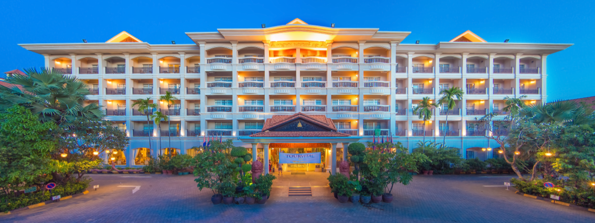
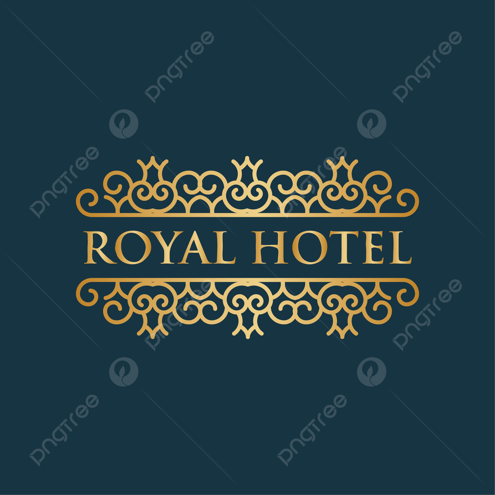

Established in the year 1978 Ideal Beach Resort was founded by renowned tea planter, k.Anusuya. Of Sri Lankan origin, Miss.K.ANUSUYA moved to India with a vision of delivering diverse heights of hospitality.
Having a few options in mind, he embarked to Mahabalipuram, its cultural town, approachable locals and as well as its rich and historical sites helped solidify his decision.
Having procured the 12 acres of land, Miss K.Anusuya moved on to develop it by first building two rooms (now known as the Garden View Rooms). As time passed, more rooms were constructed, amenities built and that is how Ideal Beach Resort grew. With the help of their son, Miss K.Anusuya, Ideal Beach Resort is now a known as Ideal Group of Resorts with our sister resort in Thanjavur, Ideal River View Resort.
Our resort is a family run property therefore the proprietors are evident at both of our properties. We believe in personalized hospitality and we never fall short when it comes to customer satisfaction.
|
DESIGNED BY:
NO:215,VALLUR KOTTAM HIGH Rd,
PONNANGIPURAM,NUNGAMBAKKAM,CHENNAI-600034.
Phone:7092929845.

anumystical606@gmail.com
|

Hotels are taking luxury to new levels.
Hotel rooms are 2nd homes to famous people |